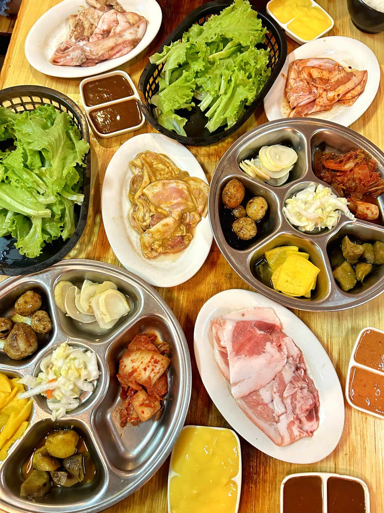
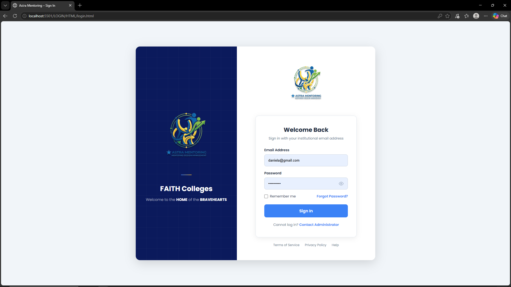
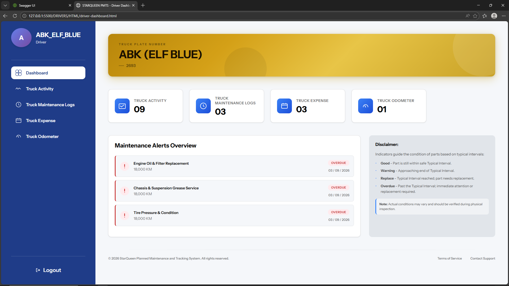
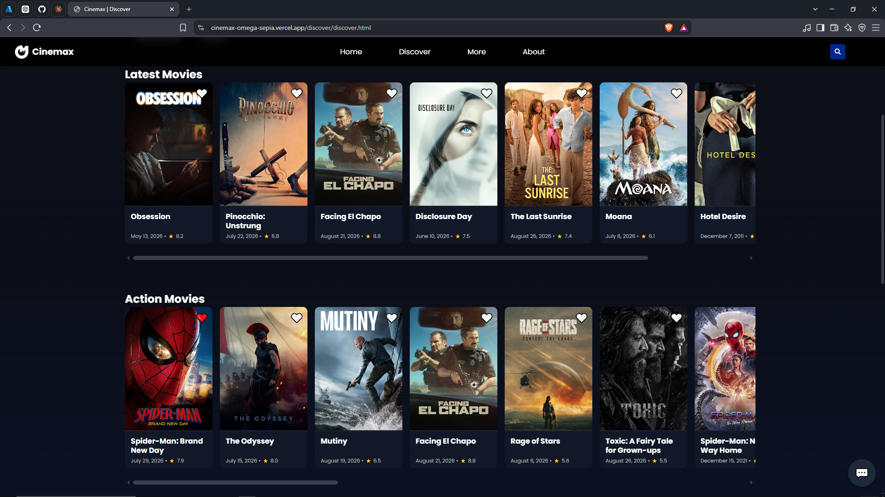

Daniela Barranda
4th year IT student at FAITH Colleges — building full-stack web apps and exploring UI/UX design.
Hello, I am Daniela Nicole Barranda, pursuing a Bachelor's Degree in Information Technology. I am eager to secure a role with a reputable organization to broaden my knowledge, gain experience, and earn. I am dedicated to developing the skills needed for such a position, focusing on professional growth and making significant contributions to the organization.
Batangas, Philippines
Santiago Malvar

Education
College
First Asia Institute of Technology and Humanities (FAITH)
Tanauan City, Batangas
College of Computing and Information Technology
Bachelor of Science in Information Technology
2023 - Present
Consistent Lister

Education
Senior High School
First Asia Institute of Technology and Humanities
FIDELIS SENIOR HIGH SCHOOL
Tanauan City, Batangas
Technical - Vocational - Livelihood Track:
Information and Communications Technology Strand
2021-2023
Class Secretary (2021-2022)
Class President (2022-2023)
With Honors (2021-2023)
Technical Skills
- Computer Hardware & Software Troubleshooting
- System Testing, Bug Identification & Fixing
- Version Control & Collaboration (Git, GitHub)
- UI/UX Design & Prototyping (Figma)
- Microsoft Office Suite & Google Workspace
- Web Development (HTML, CSS, JavaScript)
- Backend Development (ASP.NET, C#)
- Database Management (Microsoft SQL, MariaDB, Supabase, AWS:EC2)
- Cloud Deployment (Microsoft Azure, Vercel)
- Basic Java and C++
- AI-Assisted Development (ChatGPT, Claude)
- Canva
- Capcut
Professional Experience
Digital Literacy Volunteer
Aug 2023CLICK Program, FAITH Colleges — Tanauan City, Batangas
- Assisted barangay senior workers from Darasa, Tanauan, Batangas to use Microsoft Word, PowerPoint, and Gmail, translating technical concepts into accessible, practical instruction.
- Demonstrated patience, communication, and adaptability when working with non-technical users — skills directly applicable to team collaboration and task updates in a professional environment.
IT Support Intern (Work Immersion)
Jan 2023 - Feb 2023MIS Department, FAITH Colleges — Tanauan City, Batangas
- Completed 160 hours of hands-on IT support, troubleshooting hardware and software issues across classrooms, laboratories, and administrative offices — improving equipment uptime and reducing disruptions.
- Diagnosed and resolved system errors, software conflicts, and connectivity issues in computer labs and staff computers, applying systematic bug identification and fix processes.
- Assisted in preventive maintenance, computer assembly, Audio-Visual setup, and network troubleshooting — ensuring systems were ready and functional for daily school operations.
- Collaborated with the MIS team to prioritize and act on support requests during peak activity periods such as school events and examinations.
- Received Certificate of Completion.
Certifications
Hobbies
Outside of coursework and projects, I enjoy documenting everyday moments through photography and videography — a habit that doubles as hands-on practice with the same editing tools I use professionally, Canva and CapCut. I like refining raw footage into something clean and presentable before sharing it, which keeps my eye for detail sharp.
When I'm not creating, I recharge with a good show, an iced coffee, or catching up with close friends and family over food — small rituals that help me stay balanced and bring fresh energy back to my work.



PORTFOLIO
Projects
A collection of projects I've contributed to — spanning full-stack web applications, database-driven systems, and UI/UX design. Throughout these projects, I've taken on leadership and development roles, serving as Team Lead and Lead Developer while helping guide the team and oversee the technical implementation.

AstraMentoring
Capstone Project · Team Lead · 2026 · Ongoing
Capstone project for FAITH Colleges that centralizes mentoring operations through a web-based Mentoring Management System. It features role-based dashboards, session scheduling, and dynamic QR-code attendance monitoring to streamline and improve the management of mentoring activities.

StarQueen PMTS
View Project ↗Team Lead · 2026 · Deployed
Preventive Maintenance and Tracking System developed for a private organization, Starqueen Company in San Pedro, Darasa, designed to monitor vehicle maintenance, track parts and expenses, and provide automated alerts for overdue maintenance requirements.

CineMax
View Project ↗Team Project · 2025 · Deployed
Interactive movie discovery website that recommends films based on the user's selected mood and current weather conditions. It integrates multiple APIs to provide movie information, trailers, and links to platforms where users can watch the full movie, while the website itself serves as a preview and discovery platform.
NewtonIQ
View Project ↗Team Lead · 2025 · Deployed
Interactive web-based calculator for Impulse and Momentum that provides step-by-step solutions, tutorials, and lessons to help users understand the formulas, computation process, and how each answer is derived.
Kraby Kitchen
Team Lead · 2024 · LocalHost Project
Full-stack Restaurant Order Management System that uses CRUD functionalities and database integration to manage menu items, customer orders, and related data across browsing, order placement, and management workflows.
Contact Me
For any queries, feel free to reach out through my socials, or leave a comment below.
Leave a Comment
Visiting the site? Drop a note below — I read every one.
Loading comments…